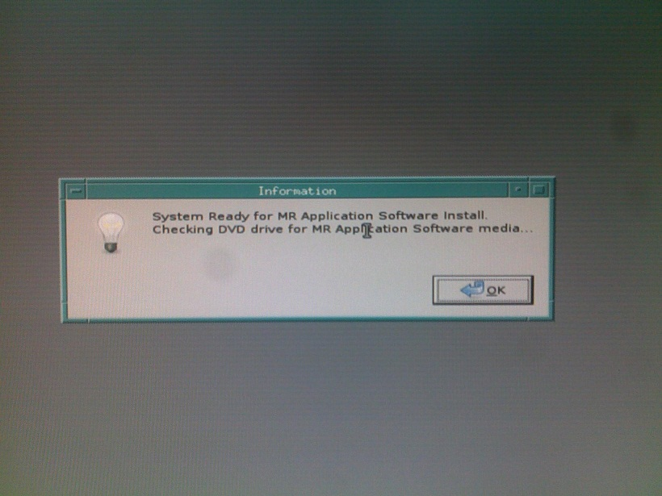
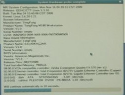
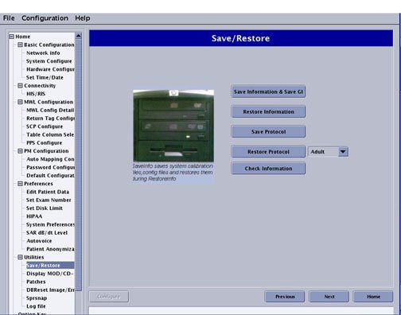
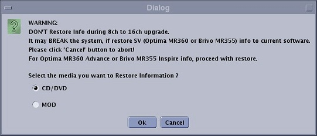
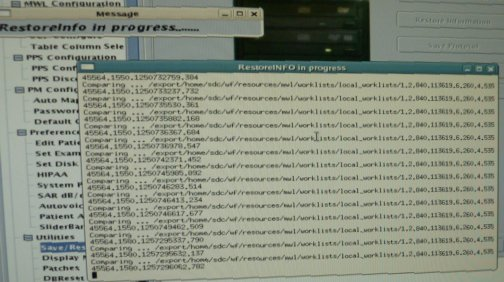
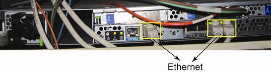

- 00000018WIA30067F20GYZ
- id_131062062.0
- Jul 19, 2019 10:59:02 AM
Loading Host System Software
Prerequisites
| Required persons | Preliminary requirements | Procedure | Finalization |
|---|---|---|---|
| 1 | Not Applicable | 1.5 hours | Not Applicable |
| Item | Quantity | Effectivity | Part number | Manufacturer |
|---|---|---|---|---|
| Service Methods DVD | 1 | - | - | - |
| Item | Quantity | Effectivity | Part number | Manufacturer |
|---|---|---|---|---|
| Linux OS Software DVD | 1 | - | - | - |
| OpenSuse OS DVD | 1 | - | - | - |
| MR Applications DVD | 1 | - | - | - |
| Restricted Service DVD | 1 | - | - | - |
| DVD-R Media for Save Info | 1 | - | - | - |
| Condition | Reference | Effectivity |
|---|---|---|
|
If this is not a new installation, perform a SaveInfo of all system settings before beginning the software installation. | - | - |
|
When conducting a software reinstallation, write down all the IIP configuration data to speed up the InSite process. (It is not saved as part of the SaveInfo procedure.) The data can be accessed from the . Click on each IIP Configuration tab, and record the data. This data can be manually entered after the software application load. | - | - |
|
When conducting a software reinstallation, it is necessary to write down all the 'Worklist Favorite' and 'Protocol Favorite'. This data can be manually entered after the software application load. Ask customer to do so or FE can do it by referring to How to record/restore protocol and worklist favorite. | - | - |
About this task
IMPORTANT: Make sure that the latest Service Pack is loaded. See the latest revision of MR Service Pack Software Matrix, DOC1667089, available from the online documentation library.
If more information is needed for how to load Service Packs, refer to Installing Software Updates
This document provides instructions for setting up host system software. It includes:
Loading Host Operating System Software
Procedure
Loading MR Applications Software
Procedure
- When the Information window (shown in Figure 5) displays,
click OK to confirm the run.
Figure 5. Confirmation Window 
The system begins partitioning the hard drives. A progress window displays. (See Figure 7.)
Figure 6. HDD Probe Complete 
Figure 7. Disk Partitioning Screen 
The system reboots automatically when the partitioning is complete. Do not interact with the system.
- The Guided Install screen will display.
When the Message screen (shown in Figure 10) displays indicating
the improvements made from the previous software version, click OK to continue.
Figure 10. Guided Install Upgrade Screen 
- If all entries pass verification at this point, click Install Software to begin the MR Applications load. If
the time and time zone are correct, click Confirm to proceed. (See Figure 14.)
Figure 14. Confirming Local Time 
- The GUI returns to the Guided Install window.
Under the Utilities tab in the left navigation,
select Save/Restore to open the Save/Restore screen shown in Figure 18.
- If the DVD with the saved configurations is not available, go
to each tab in the Install GUI and complete all system information
manually. A Help button that provides information
on the required data and its format is available on each tab.
Figure 18. Save/Restore Screen 
- If the DVD with saved configurations is available, click Restore Information, and select the proper media from the dialog box. (See Figure 11.)
- When the Restore Info Dialog box (shown
in Figure 19) displays, click Restore all files automatically, then click Continue.
Figure 19. Restore Option Window 
 Note:
Note:If restoration fails, the DVD automatically ejects the media. Exit the Guided Install and allow the system to reboot. When the system restarts, return to the Guided Install and attempt to Restore Info again.
- If the DVD with the saved configurations is not available, go
to each tab in the Install GUI and complete all system information
manually. A Help button that provides information
on the required data and its format is available on each tab.
- A RestoreInfo in Progress window scrolls
filenames as they are restored.
Figure 20. RestoreInfo in Progress 
- Click Yes when the Quit Tool message (shown in Figure 24) displays.
Figure 24. Quitting Restore Manager 
-
The message shown in Figure 25) confirms that a log file was created. Click OK to finish.
-
The MR Applications software load is now complete.
Figure 25. Log File 
-

Loading and Configuring VRE Software
Procedure
- When the Information window (shown in Figure 32) displays, click Continue to confirm that the VRE Gigabit Switch Ethernet
and Host Ethernet connections (Figure 33) are complete
and correct.
Figure 32. Confirm VRE Installation 
Figure 33. VRE Gigabit Switch and Host Ethernet Connections (ICN 4170M2) 
Other software Installation
Procedure
SaveInfo Procedure
Procedure
- Perform Save Info.
- If verify info is not done yet, perform Verifying Save Restore Media.
Finalization
Procedure
- IMPORTANT: Make sure that the latest Service Pack is loaded. See the latest revision of MR Service Pack Software Matrix, DOC1667089, available from the online documentation library.
- If more information is needed for how to load Service Packs, refer toInstalling Software Updates
- Restore IIP configuration data which was write down before Software installation.
- Restore protocol and worklist favorite which was write down before Software installation. Refer to How to record/restore protocol and worklist favorite.